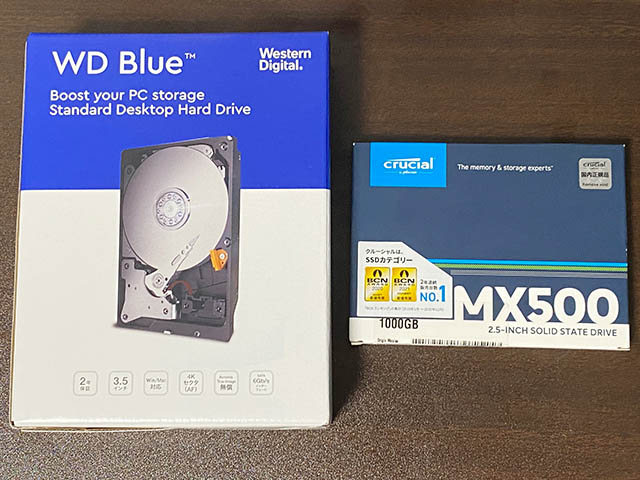
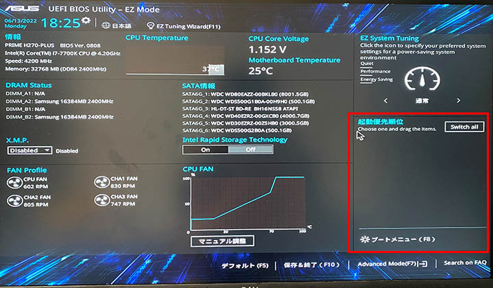
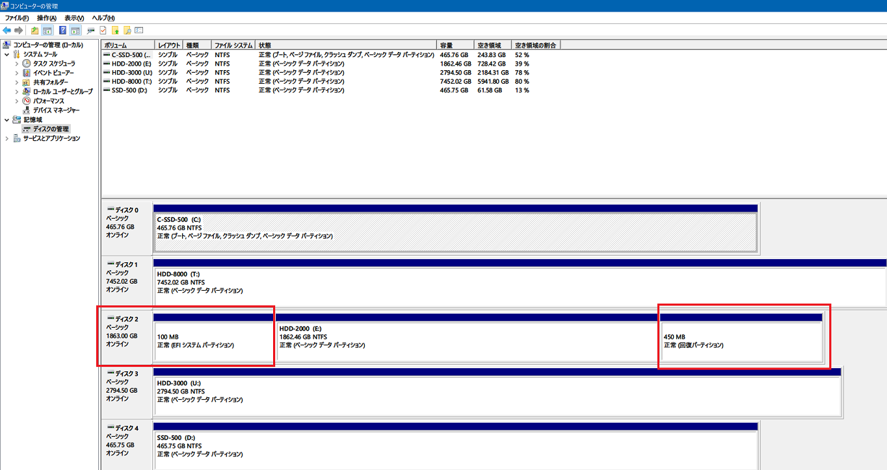
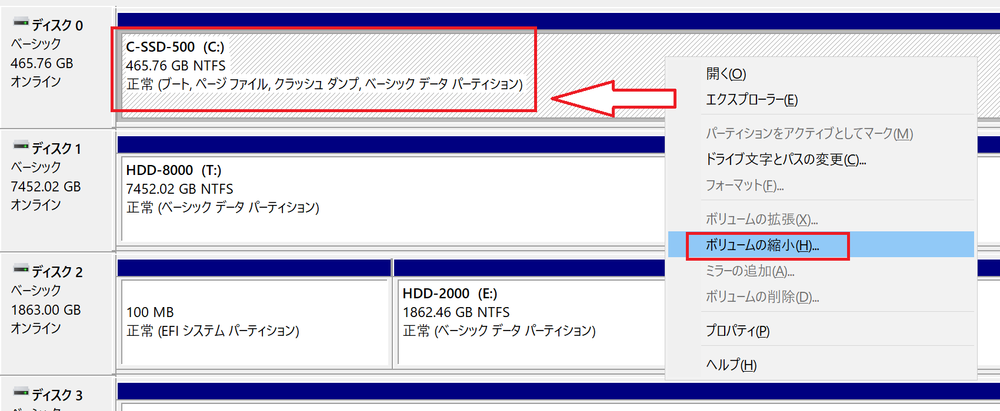
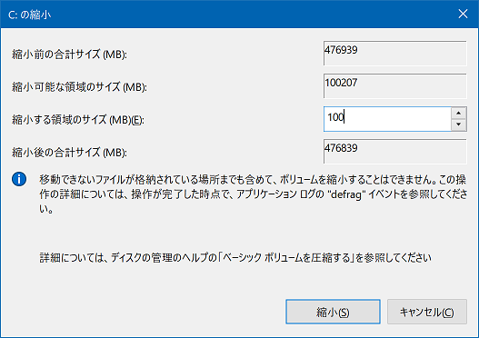
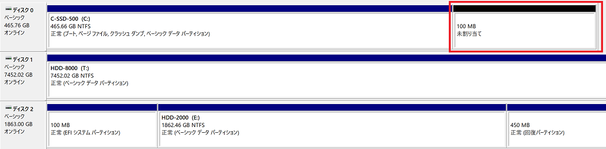
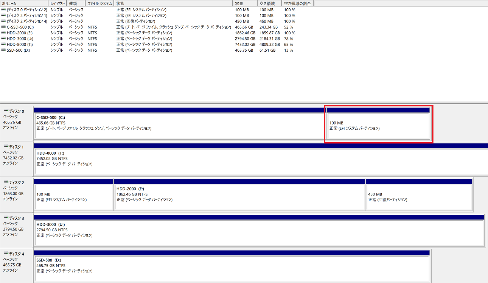
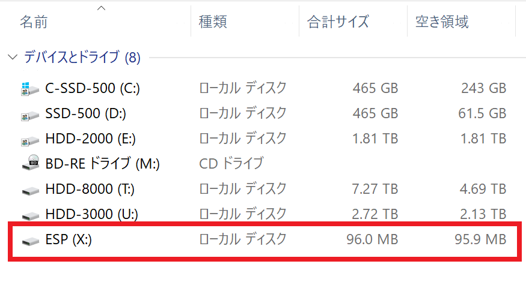
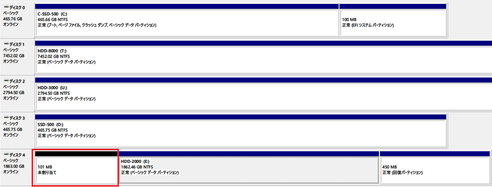
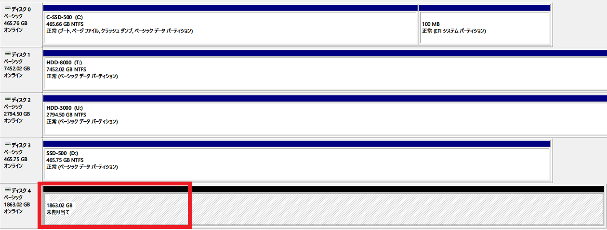

HDD・SSD 換装時に問題が発生したので EFI ブートローダを再インストールした
2年ぶりに母艦の内蔵 HDD と SSD を変更したところ、トラブルに遭遇。
目次
- いきさつ
- 購入した SSD と HDD
- 換装
- BIOS 画面から先に進まない
- 強引にホットスワップで動かしていたら気付いた…
- EFI システムパーティションの作成に関して参考になったサイト
- ボリュームの縮小
diskpartコマンドで EFI システムパーティションを作成する- 動作確認する
- 「ESP」ボリュームのドライブレターを削除する
- HDD 側の EFI システムパーティションなどを削除する
- 謎に苦労したけどなんとかなった
いきさつ
2020年に、母艦のデスクトップ PC、Galleria XG に HDD と SSD を増設していた。
この PC ケースには3.5インチベイが5段あるのだが、現状は筐体の上から下 (底面) に向かって、次のような並び順にしていた。
- 3TB HDD
- 500GB SSD
- 2TB HDD
- 500GB SSD (システムドライブ)
- 4TB HDD
用途別に 2・3・4TB の HDD をデータ用にし、高速にデータ転送をしたい時のために2つ目の SSD を積んでいる、という感じだった。
だが、SSD が 500GB × 2台だと動画編集などですぐにいっぱいになってしまうため、今回思い切って HDD と SSD の構成を変えることにした。
購入した SSD と HDD
秋葉原に行って安い店を色々探したのだが、結局はソフマップが最安値だったｗ。購入したのは以下の2つ。
- Western Digital WD Blue WD80EAZZ : 8TB HDD (3.5インチ) … 13,880円
- Crucial CT1000MX500 : 1TB SSD (2.5インチ) … 11,800円



HDD は個人的に安定の WD Blue。3・4TB HDD と2つの SSD はいずれも WD Blue である。今回は大容量の 8TB を購入した。Seagate BarraCuda もほぼ同じか若干安いぐらいのラインナップだったが、自分の中で実績のあるメーカで選んだ。


SSD の方は、初めてクルーシャル製品を選んだ。WD Blue の SSD にしようとすると数千円高くなるので、値段で選んだｗ。クルーシャルは MX500 よりわずかに安い BX500 というラインナップもあったが、筐体がプラパーツだか何だかで冷却性能が微妙、読み書き速度も若干遅くなるらしいので、だったら千円ちょっと出して良い方を買っておくか、ということで MX500 シリーズを選んだ。同価格帯には SanDisk の Plus だか Ultra だかいう製品もあり、良し悪しが一見して分かりにくいね。ｗ
ちなみに、Galleria XG のマザーボード、Asus Prime H270-Plus には M.2 SSD を挿せる場所も2つあるのだが、未経験の M.2 は避けて今までと同じく SATA 6Gbps 接続の2.5インチ SSD を選んだ。M.2 にしたらもっと速いんだろうけど、それは将来のメインマシン交換のときにとっとくわ。ｗ
換装
購入した HDD・SSD を換装していく。計画としては、既存の 2・3TB HDD の2つを取り除き、HDD 2台、SSD 3台を取り付けることにした。After は筐体の上から下 (底面) に向かって、次のような並び順。
- 8TB HDD (今回購入)
- 500GB SSD (既存)
- 1TB SSD (今回購入)
- 500GB SSD (既存・システムドライブ)
- 4TB HDD (既存)
マザボの SATA ポートの番号は並び順どおりではなくグチャグチャなのだが、特に SATA ポートの番号の若い順に揃えたりしてもしなくても、動作には関係がなかった。ちなみに接続した SATA ポート番号順に書くとこんな感じ。
- 8TB HDD
- 500GB SSD (システムドライブ)
- Blu-ray ドライブ (既存のまま)
- 4TB HDD
- 1TB SSD
- 500GB SSD
今回はケーブル類は既に揃っているので、ドライブの取り外しと取り付けのみ。コレで上手くいくはずだったのだが…。
BIOS 画面から先に進まない
2TB HDD と 3TB HDD を取り外し、8TB HDD と 1TB SSD を取り付けて起動したところ、UEFI BIOS 画面から先に進まなくなってしまった。よく見ると、SATA ポートに挿さっているドライブ類は全て認識しているのだが、ブート順序を選択できる画面でどのドライブも一覧に登場しない。システムドライブである SSD はケーブルを取り外したり移動したりしていないのだが、どうしてこのドライブがブートメニューに出てこないのだろうか？

↑ 本来はこの UEFI BIOS 画面の右下に、ブート順序を選択できる一覧が表示されるはずなのだが、赤枠部にどのドライブも出てこない。しかしその左側の SATA ポート一覧には HDD と SSD の製品名まで正しく表示されていて、新しい 8TB HDD・1TB SSD も認識はしているので、「システムドライブである SSD の接続を認識していない」ワケではないようだ。
SATA ポートの番号を変えてみたりなど色々したがダメ。仕方なく 2TB HDD と 3TB HDD を元に戻して取り付けてみると無事起動した。
強引にホットスワップで動かしていたら気付いた…
元の構成だととりあえず Windows10 が起動したので、OS が起動している状態で、強引に SATA 端子を抜いて新しい HDD に差し替えることで、無理やりホットスワップしてみたら、とりあえずは新しい HDD も SSD も認識した。ということで、今回購入したドライブが故障しているワケではなさそう。
ひとまずは既存の 2TB HDD と 3TB HDD から、データを抽出して 8TB HDD に移動させていたのだが、ふと「コンピューターの管理」→「ディスクの管理」でディスクを眺めていたところ、異変に気が付いた。

↑ 一覧の一番上が、システムドライブである 500GB の SSD。そして2つ下、赤枠で囲っているのが 2TB の HDD なのだが、ココに「EFI システムパーティション」なるパーティションと、「回復パーティション」なるパーティションが存在することに気付いた。
そこで調べてみると、この「EFI システムパーティション」という部分が最初に起動することで、ブート順序を決めたりするための UEFI 部分が動作するようだ。
そういえば引越し後にリカバリをした際、一度 HDD 側に OS が再インストールされてしまうトラブルがあった。その時は SSD 側に再インストールするようにして対応したのだが、どうやらその時に OS と一緒に EFI 関連のパーティションが HDD 側にインストールされたまま動いていたようだ。要するに 2TB の HDD を接続しておかないと PC が起動できない状態になっていたワケである。システムドライブである SSD の手前に必要な「EFI ブートローダ」というプログラムが、HDD 側にインストールされていたワケだ。
もう一つの「回復パーティション」というのはリカバリ時に使用するようだが、自分は今後リカバリする際はクリーンインストールするつもりなので、「システムの復元」は使わないのでココは捨ててしまって良いか。
ということは、やるべきことは、2TB HDD に存在している「EFI システムパーティション」(EFI System Partition、略して ESP) を、システムドライブである 500GB SSD の方に作り直すという作業が必要になる。
EFI システムパーティションの作成に関して参考になったサイト
最初は EFI システムパーティションとやらが何なのかすら分かっていない状態だったのだが、以下の記事が分かりやすかった。
大まかな手順をまとめておく。
- 「EFI システムパーティション」を作りたい SSD で「ボリュームの縮小」を行い、「EFI システムパーティション」用の未割り当て領域を作る
diskpartコマンドで SSD の未割り当て領域に対し、EFI システムパーティションを作る- 動作確認したら、HDD 側にある EFI システムパーティションを削除する
実質、必須なのは手順 1. と 2. だけで、手順 3. は後処理だ。
ちなみに色々調べたが、ドライブのパーティションの「左右」を入れ替えるのは無理そう。完全に全体をフォーマットして、左から順にパーティションを切り直さないといけないようだ。ググると「EaseUS Partition Master Free」といった専用ソフトがトップに出てきたりするが、こういうソフトでもパーティションの左右入れ替えなどは出来なかった。
綺麗にパーティションを切るなら、ドライブの左から「EFI システムパーティション」、システムパーティション、(任意で回復パーティション)、という風に並べたいところだが、今回はシステムパーティション → ESP という順番でパーティションを切り、動作上も問題なかったので、この手順で紹介する。
ボリュームの縮小
まずはシステムドライブに EFI パーティション用の未割り当て領域を作る。「コンピューターの管理」→「ディスクの管理」と移動し、システムドライブを右クリックして「ボリュームの縮小」を選ぶ。

次に、ウィザードで作成する領域を指定するのだが、ココでは既存の EFI システムパーティションの容量に合わせて 100MB の領域を作ることにする。

上手くパーティションが区切れると、以下のように未割り当て領域が 100MB 分できるはずだ。

diskpart コマンドで EFI システムパーティションを作成する
続いて、この未割り当て領域に「EFI システムパーティション」を作っていく。
管理者権限で PowerShell を起動し、diskpart コマンドを実行する。
PS C:\WINDOWS\system32> diskpart
Microsoft DiskPart バージョン 10.0.19041.964
Copyright (C) Microsoft Corporation.
コンピューター: NEOS-GALLERIA
# 「ボリューム」の一覧を見るとこんな感じ
DISKPART> list volume
Volume ### Ltr Label Fs Type Size Status Info
---------- --- ----------- ---- ---------- ------- --------- --------
Volume 0 M DVD-ROM 0 B メディアなし
Volume 1 C C-SSD-500 NTFS Partition 465 GB 正常 ブート
Volume 2 T HDD-8000 NTFS Partition 7452 GB 正常
Volume 3 E HDD-2000 NTFS Partition 1862 GB 正常
Volume 4 SYSTEM FAT32 Partition 100 MB 正常 非表示
Volume 5 Windows RE NTFS Partition 450 MB 正常 非表示
Volume 6 U HDD-3000 NTFS Partition 2794 GB 正常
Volume 7 D SSD-500 NTFS Partition 465 GB 正常
DISKPART> list disk
ディスク 状態 サイズ 空き ダイナ GPT
### ミック
------------ ------------- ------- ------- --- ---
ディスク 0 オンライン 465 GB 100 MB *
ディスク 1 オンライン 7452 GB 1024 KB *
ディスク 2 オンライン 1863 GB 0 B *
ディスク 3 オンライン 2794 GB 1024 KB *
ディスク 4 オンライン 465 GB 1024 KB *
すると DISKPART> という専用のプロンプトが表示される。まずは list volume でエクスプローラに表示される相当のドライブ達を確認し、list disk で「ディスクの管理」相当の内容が見えていることを確認する。
list volume の方を見ると、SYSTEM と Windows RE という非表示のボリュームがある。コレが、2TB の HDD に作られてしまっている「EFI システムパーティション」と「回復パーティション」に相当する。
diskpart では、ディスク → パーティション、という入れ子構造で操作する要素を選択していく。今回はシステムドライブである 500GB の SSD の中にある、100MB 分の未割り当て領域を選択していく。
# list disk の内容を見て、ディスク 0 を選択する
DISKPART> select disk 0
ディスク 0 が選択されました。
# ディスク 0 内の既存のパーティションを確認する。未割り当て領域はココには表示されない
DISKPART> list partition
Partition ### Type Size Offset
------------- ------------------ ------- -------
Partition 1 プライマリ 465 GB 1024 KB
# 選択したディスク 0 の中にパーティションを作成する。size は MB 単位なので、100MB 単位でパーティションを作る
DISKPART> create partition EFI size=100
DiskPart は指定したパーティションの作成に成功しました。
# パーティションが作成できたことを確認する。行頭のアスタリスクで作成した Partition 2 が選択されていることを確認する
DISKPART> list partition
Partition ### Type Size Offset
------------- ------------------ ------- -------
Partition 1 プライマリ 465 GB 1024 KB
* Partition 2 システム 100 MB 465 GB
# ボリューム一覧にも Volume 8 が新登場した。行頭のアスタリスクで作成した Volume 8 が選択されていることを確認する
DISKPART> list volume
Volume ### Ltr Label Fs Type Size Status Info
---------- --- ----------- ---- ---------- ------- --------- --------
Volume 0 M DVD-ROM 0 B メディアなし
Volume 1 C C-SSD-500 NTFS Partition 465 GB 正常 ブート
Volume 2 T HDD-8000 NTFS Partition 7452 GB 正常
Volume 3 E HDD-2000 NTFS Partition 1862 GB 正常
Volume 4 SYSTEM FAT32 Partition 100 MB 正常 非表示
Volume 5 Windows RE NTFS Partition 450 MB 正常 非表示
Volume 6 U HDD-3000 NTFS Partition 2794 GB 正常
Volume 7 D SSD-500 NTFS Partition 465 GB 正常
* Volume 8 RAW Partition 100 MB 正常 非表示
このように、まずはパーティションだけ切れた。引き続きこのパーティションをフォーマットし、UEFI ブートローダをインストールしていく。
# 選択されている Volume 8 をフォーマットし、「ESP」というラベルを付けておく
DISKPART> format quick fs=fat32 label="ESP"
100% 完了しました
DiskPart は、ボリュームのフォーマットを完了しました。
# フォーマットした Volume 8 = 「ESP」はこんな感じ
DISKPART> list volume
Volume ### Ltr Label Fs Type Size Status Info
---------- --- ----------- ---- ---------- ------- --------- --------
Volume 0 M DVD-ROM 0 B メディアなし
Volume 1 C C-SSD-500 NTFS Partition 465 GB 正常 ブート
Volume 2 T HDD-8000 NTFS Partition 7452 GB 正常
Volume 3 E HDD-2000 NTFS Partition 1862 GB 正常
Volume 4 SYSTEM FAT32 Partition 100 MB 正常 非表示
Volume 5 Windows RE NTFS Partition 450 MB 正常 非表示
Volume 6 U HDD-3000 NTFS Partition 2794 GB 正常
Volume 7 D SSD-500 NTFS Partition 465 GB 正常
* Volume 8 ESP FAT32 Partition 100 MB 正常 非表示
# 選択中の Volume 8 に、一時的にドライブレターを割り当てる
DISKPART> assign letter=X
DiskPart はドライブ文字またはマウント ポイントを正常に割り当てました。
# ドライブレターとして「X」が正常に割り当てられたことを確認する
DISKPART> list volume
Volume ### Ltr Label Fs Type Size Status Info
---------- --- ----------- ---- ---------- ------- --------- --------
Volume 0 M DVD-ROM 0 B メディアなし
Volume 1 C C-SSD-500 NTFS Partition 465 GB 正常 ブート
Volume 2 T HDD-8000 NTFS Partition 7452 GB 正常
Volume 3 E HDD-2000 NTFS Partition 1862 GB 正常
Volume 4 SYSTEM FAT32 Partition 100 MB 正常 非表示
Volume 5 Windows RE NTFS Partition 450 MB 正常 非表示
Volume 6 U HDD-3000 NTFS Partition 2794 GB 正常
Volume 7 D SSD-500 NTFS Partition 465 GB 正常
* Volume 8 X ESP FAT32 Partition 100 MB 正常 非表示
# diskpart コマンドを終了する
DISKPART> exit
DiskPart を終了しています...
そしたら引き続き管理者権限で起動している PowerShell 上で、次のように bcdboot コマンドを実行する。
PS C:\WINDOWS\system32> bcdboot C:\Windows /s X: /f UEFI
ブート ファイルは正常に作成されました。
割り当てたドライブレターである「X」を指定し、UEFI ブートローダをインストールできた。

↑ 「ディスクの管理」で確認すると、このように EFI システムパーティションが作成できているはずだ。

↑ ちなみにエクスプローラにも、ドライブレター「X」を割り当てたボリューム「ESP」が見えていることだろう。
動作確認する
ココまで作業できたら、一度 PC の電源を落として、今まで EFI システムパーティションが載っていた 2TB の HDD を取り外してマシンを起動してみる。SSD 側に新規作成した EFI システムパーティションを使って PC が起動してくれるか確認する。
自分は問題なく SSD のみで PC が起動するようになった。とりあえず必須の作業はココまでで、あとは残処理。
「ESP」ボリュームのドライブレターを削除する
「ESP」ボリュームが X ドライブとして見え続けている必要はないので、ドライブレターを削除する。管理者権限で起動した PowerShell で再び diskpart コマンドを起動する。
DISKPART> list volume
Volume ### Ltr Label Fs Type Size Status Info
---------- --- ----------- ---- ---------- ------- --------- --------
Volume 0 M DVD-ROM 0 B メディアなし
Volume 1 C C-SSD-500 NTFS Partition 465 GB 正常 ブート
Volume 2 X ESP FAT32 Partition 100 MB 正常 非表示
Volume 3 T HDD-8000 NTFS Partition 7452 GB 正常
Volume 4 E HDD-2000 NTFS Partition 1862 GB 正常
Volume 5 SYSTEM FAT32 Partition 100 MB 正常 非表示
Volume 6 Windows RE NTFS Partition 450 MB 正常 非表示
Volume 7 U HDD-3000 NTFS Partition 2794 GB 正常
Volume 8 D SSD-500 NTFS Partition 465 GB 正常
# Volume 2 を選択する
DISKPART> select volume 2
ボリューム 2 が選択されました。
# 割り当てていたドライブレター「X」を削除する
DISKPART> remove letter X
DiskPart はドライブ文字またはマウント ポイントを正常に削除しました。
# ドライブレターが消えたことを確認する
DISKPART> list volume
Volume ### Ltr Label Fs Type Size Status Info
---------- --- ----------- ---- ---------- ------- --------- --------
Volume 0 M DVD-ROM 0 B メディアなし
Volume 1 C C-SSD-500 NTFS Partition 465 GB 正常 ブート
* Volume 2 ESP FAT32 Partition 100 MB 正常 非表示
Volume 3 T HDD-8000 NTFS Partition 7452 GB 正常
Volume 4 E HDD-2000 NTFS Partition 1862 GB 正常
Volume 5 SYSTEM FAT32 Partition 100 MB 正常 非表示
Volume 6 Windows RE NTFS Partition 450 MB 正常 非表示
Volume 7 U HDD-3000 NTFS Partition 2794 GB 正常
Volume 8 D SSD-500 NTFS Partition 465 GB 正常
HDD 側の EFI システムパーティションなどを削除する
コレでシステムドライブがある SSD 側の対応は終わったので、あとは 2TB の HDD 側にある EFI システムパーティションと回復パーティションを削除してしまおう。
以降の作業では 2TB の HDD を一度初期化するので、当然ながら HDD 内のデータは事前に退避しておくこと。
# ディスク 4 が 2TB HDD のこと
DISKPART> list disk
ディスク 状態 サイズ 空き ダイナ GPT
### ミック
------------ ------------- ------- ------- --- ---
ディスク 0 オンライン 465 GB 0 B *
ディスク 1 オンライン 7452 GB 1024 KB *
ディスク 2 オンライン 2794 GB 1024 KB *
ディスク 3 オンライン 465 GB 1024 KB *
ディスク 4 オンライン 1863 GB 0 B *
# Volume 6・7・8 の3つが 2TB の HDD に作られているパーティション達だ
DISKPART> list volume
Volume ### Ltr Label Fs Type Size Status Info
---------- --- ----------- ---- ---------- ------- --------- --------
Volume 0 M DVD-ROM 0 B メディアなし
Volume 1 C C-SSD-500 NTFS Partition 465 GB 正常 ブート
Volume 2 ESP FAT32 Partition 100 MB 正常 システム
Volume 3 T HDD-8000 NTFS Partition 7452 GB 正常
Volume 4 U HDD-3000 NTFS Partition 2794 GB 正常
Volume 5 D SSD-500 NTFS Partition 465 GB 正常
Volume 6 E HDD-2000 NTFS Partition 1862 GB 正常
Volume 7 SYSTEM FAT32 Partition 100 MB 正常 非表示
Volume 8 Windows RE NTFS Partition 450 MB 正常 非表示
# 2TB HDD を選択する
DISKPART> select disk 4
ディスク 4 が選択されました。
# 現在のパーティションを確認する
DISKPART> list partition
Partition ### Type Size Offset
------------- ------------------ ------- -------
Partition 1 システム 100 MB 1024 KB
Partition 2 予約 16 MB 101 MB
Partition 3 プライマリ 1862 GB 117 MB
Partition 4 回復 450 MB 1862 GB
# EFI システムパーティションに相当する Partition 1 を選択する
DISKPART> select partition 1
パーティション 1 が選択されました。
# Partition 1 が選択できていることを行頭のアスタリスクで確認する
DISKPART> list partition
Partition ### Type Size Offset
------------- ------------------ ------- -------
* Partition 1 システム 100 MB 1024 KB
Partition 2 予約 16 MB 101 MB
Partition 3 プライマリ 1862 GB 117 MB
Partition 4 回復 450 MB 1862 GB
# パーティションを削除する
DISKPART> delete partition override
DiskPart は選択されたパーティションを正常に削除しました。
# 削除したパーティションは一覧に表示されなくなる
DISKPART> list partition
Partition ### Type Size Offset
------------- ------------------ ------- -------
Partition 2 予約 16 MB 101 MB
Partition 3 プライマリ 1862 GB 117 MB
Partition 4 回復 450 MB 1862 GB
こんな感じで、HDD 側に作られていた EFI システムパーティションを「未割り当て」状態にできた。この時点で「ディスクの管理」を見ると、以下のようになっているだろう。

↑ EFI システムパーティションがあったところが「未割り当て」になっている。
# 引き続き、回復パーティションも削除する
DISKPART> select partition 4
パーティション 4 が選択されました。
DISKPART> delete partition override
DiskPart は選択されたパーティションを正常に削除しました。
# ついでに、データ部分のパーティションも削除する
DISKPART> select partition 3
パーティション 3 が選択されました。
DISKPART> delete partition override
DiskPart は選択されたパーティションを正常に削除しました。
DISKPART> list partition
Partition ### Type Size Offset
------------- ------------------ ------- -------
Partition 2 予約 16 MB 101 MB
# ついでについでに、謎の「予約」パーティションも削除してまっさらにする
DISKPART> select partition 2
パーティション 2 が選択されました。
DISKPART> delete partition override
DiskPart は選択されたパーティションを正常に削除しました。
DISKPART> list partition
このディスクには表示するパーティションがありません。
こうして 2TB の HDD はまっさらになった。
# 2TB の HDD がボリューム一覧から見えなくなった
DISKPART> list volume
Volume ### Ltr Label Fs Type Size Status Info
---------- --- ----------- ---- ---------- ------- --------- --------
Volume 0 M DVD-ROM 0 B メディアなし
Volume 1 C C-SSD-500 NTFS Partition 465 GB 正常 ブート
Volume 2 ESP FAT32 Partition 100 MB 正常 システム
Volume 3 T HDD-8000 NTFS Partition 7452 GB 正常
Volume 4 U HDD-3000 NTFS Partition 2794 GB 正常
Volume 5 D SSD-500 NTFS Partition 465 GB 正常
# ディスク一覧には存在している
DISKPART> list disk
ディスク 状態 サイズ 空き ダイナ GPT
### ミック
------------ ------------- ------- ------- --- ---
ディスク 0 オンライン 465 GB 0 B *
ディスク 1 オンライン 7452 GB 1024 KB *
ディスク 2 オンライン 2794 GB 1024 KB *
ディスク 3 オンライン 465 GB 1024 KB *
* ディスク 4 オンライン 1863 GB 1863 GB *
DISKPART> exit
DiskPart を終了しています...
さて、ココまで作業できたら、「ディスクの管理」で 2TB の HDD 全体が一つの「未割り当て領域」になっていることが確認できるだろう。

あとは前回のブログ記事でもやったように、GPT 方式でディスクの初期化をして、NTFS とかでフォーマットすれば、このドライブは再び 2TB のデータ用 HDD として機能するようになる。おまけに余計な EFI システムパーティションや回復パーティションも削除できたワケだ。
謎に苦労したけどなんとかなった
…というワケで、「EFI システムパーティション」とかいう思いもよらぬモノのせいで慌てたが、ひとまずコレで SSD・HDD の移設が完了した。
- システムドライブを担う 500GB の SSD に「EFI システムパーティション」が載り、この PC はこの SSD が1台繋がっていれば、とりあえず OS は起動する状態になった。
- そして既存の 500GB の SSD (2つ目) と、今回購入した 1TB の SSD とを、高速なデータ転送が必要なデータ置き場として利用する。
- 既存の 4TB の HDD と、今回購入した 8TB の HDD は、その他のデータを全て保存している。
- あとは USB で外付けの 4TB HDD も繋いでいるので、4TB の内蔵 HDD はコチラとデータを二重化してある
- 8TB HDD に保存しているデータのバックアップができていないが、まぁココはネットで拾ったデータ置き場なので最悪は失ってもいいかと思っている
取り外した 2TB と 3TB の HDD は、それぞれ 8TB HDD にデータを移動したので、空っぽな状態で持て余している。内蔵 HDD を USB 接続できるようにするアダプタなんかを使えばデータ置き場として利用したりもできるし、NAS だか裸族のタワーケースだかでも買えば使えるんだろうけど、今のところそこまでして置きたいデータもないので、押し入れにしまっておく。ｗ